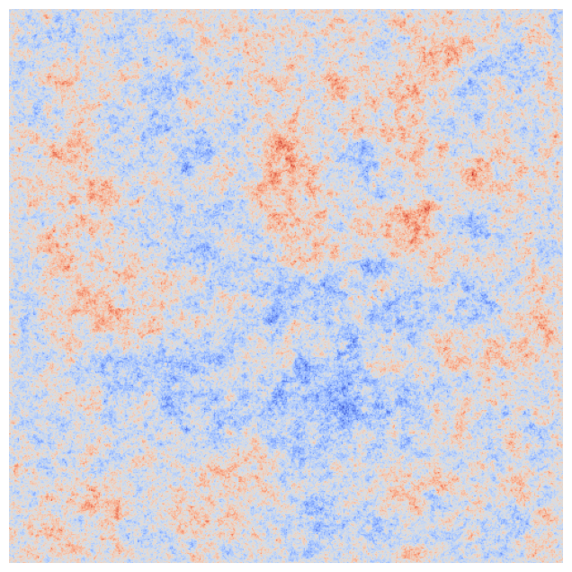
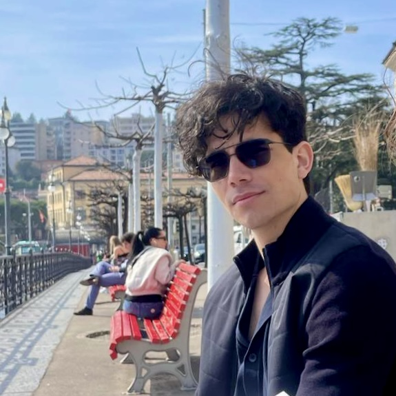

Education
- M.Sc. Mathematics, ETH Zurich, 2023-2025
- B.Sc Engineering Mathematics, KTH Stockholm, 2020-2023
- B.Sc Exchange Mathematics, ETH Zurich, 2022-2023
- Business & Economics, Stockholm School of Economics, 2019-2021
- German Abitur & Svensk Studentexamen, Deutsche Schule Stockholm, 2007-2019
Projects
- Quasiconformal deformation and Loewner energy optimization - 2025
[PDF]
- Circle average and delocalization of random fields - 2025
[PDF]
- ZUCCMAP presentation - 2024
[YouTube]
- "Random regular graphs", student seminar presentation with N. Hotton - 2024
- Random curves and their scaling limits - 2023
[PDF]
Work experience
- Apotea AB, Consultant ML, 2025
- Elypta AB, Data Science Intern, 2022
- KTH Royal Institute of Technology, TA Analysis I and Linear Algebra I, 2021-2022
- Simon och Ekarna (2011), Child actor "Young Simon", 2010-2011
Interests
- Random Conformal Geometry
Since September 2025 I share some random thoughts in notebooks →
Lecture Notes - ETHZ courses
- Mathematical Finance - 2025
[PDF]
Currently reading
- Der Mann ohne Eigenschaften (The Man Without Qualities) - Robert Musil
- Nostromo - Joseph Conrad